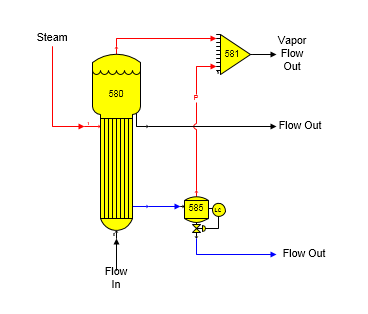

In some cases, the Output Flow Temperature, or Vapor Out Pressure aren't known before the balance calculations are done by Sugars. By sending the vapor flow to a receiver station that has one, or more, other input flow streams that have a flow stream pressure, the flash tank can be made to flash to the pressure of the other flow stream, or the minimum pressure of all other flow streams, if there is more than one other input flow to the receiver. For example, in the diagram below, a condensate flash tank has vapor flashing to a vapor line from an evaporator station. Note the small 'P' on the flash vapor line from station no. 585 to 581 to indicate that the vapor line is a pressure feedback line. In this case, the Pressure Feedback box is checked on the Flash Tank Properties window. An input value may still be given for the Sugar Loss, if applicable.

Water vapor flashing will occur in the flash tank station if: (1) the pressure of the condensate flow in is equal to, or greater than, the feedback pressure, and (2) the temperature of the condensate flow in is greater than the saturation temperature plus boiling point elevation at the feedback pressure; otherwise, no changes will occur in the condensate flow and the output flow pressure, temperature and quantity will be the same as the input flow pressure. The small 'P' on the vapor line from the flash tank is displayed by Sugars when the vapor line is a pressure feedback flow.